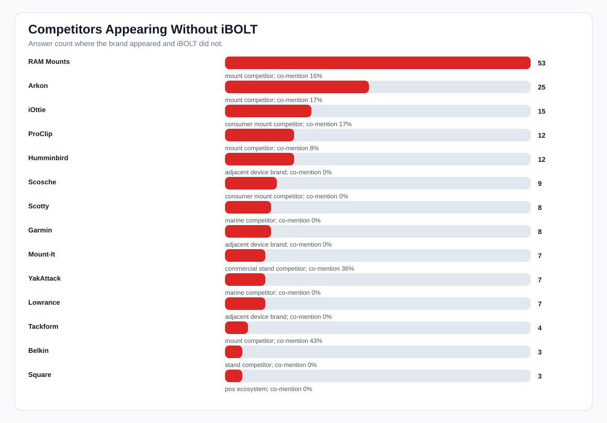
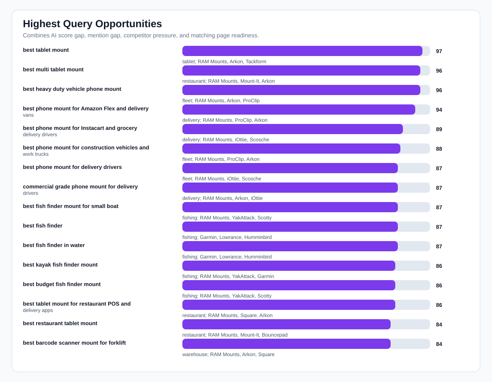
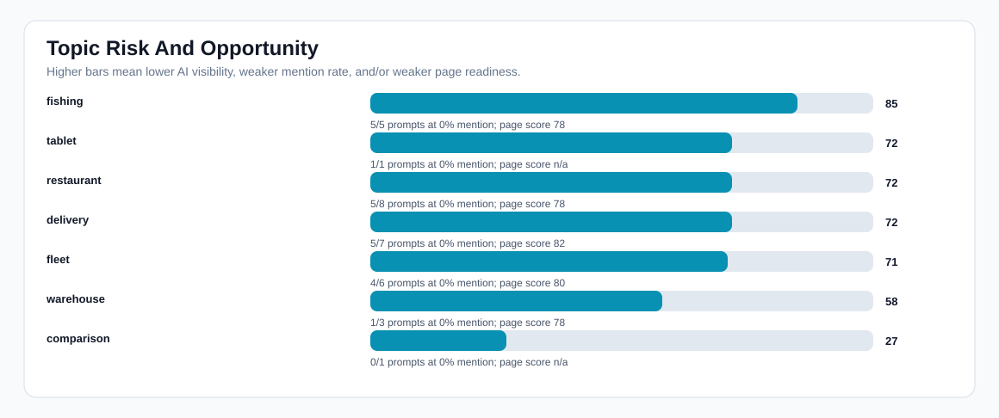
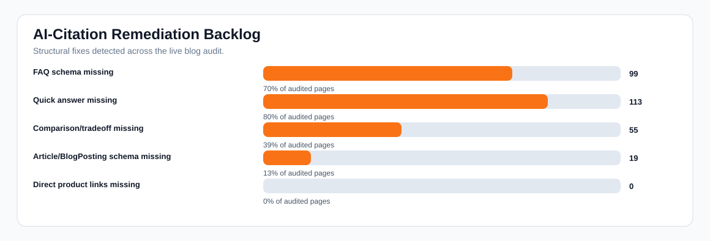

iBOLT Competitive AI Visibility Matrix
Bottom line: iBOLT has enough content to compete, but AI systems still choose RAM, Arkon, iOttie, ProClip, Mount-It, and marine brands too often. The fastest path is refreshing existing high-intent pages with quick answers, FAQ schema, comparison blocks, and clearer product-specific citations.
AI answers
93
ChatGPT, Gemini, Claude
Mention rate
24%
22/93 answers
Non-branded mention
5%
4/75 answers
Top-3 rate
16%
15/93 answers
Citation rate
0%
0/93 answers
Competitor-only
68
66 normalized matrix rows
Page readiness
75/100
142 audited pages
Charts




Competitor Battlecards
| Brand | Answers | With iBOLT | Without iBOLT | Co-mention | Lost prompts | Counter-positioning |
|---|---|---|---|---|---|---|
| RAM Mounts mount competitor |
63 | 10 | 53 | 16% | best phone mount for Amazon Flex and delivery vans; best phone mount for delivery drivers; best ELD mount for trucks; magnetic vs clamp phone mounts for delivery work | Position iBOLT as the specialist for exact business workflows, with modular parts that remain cross-compatible with industry-standard balls and AMPS patterns. |
| Arkon mount competitor |
30 | 5 | 25 | 17% | best phone mount for Amazon Flex and delivery vans; best ELD mount for trucks; commercial grade phone mount for delivery drivers; best restaurant tablet mount | Position iBOLT around commercial durability, locked tablet workflows, restaurant stations, forklift mounts, and fleet-specific fit. |
| iOttie consumer mount competitor |
18 | 3 | 15 | 17% | best phone mount for Amazon Flex and delivery vans; best phone mount for delivery drivers; magnetic vs clamp phone mounts for delivery work; commercial grade phone mount for delivery drivers | Position iBOLT as commercial-grade equipment rather than consumer phone accessories. |
| ProClip mount competitor |
13 | 1 | 12 | 8% | best phone mount for Amazon Flex and delivery vans; best phone mount for delivery drivers; best ELD mount for trucks; best forklift tablet mount | Position iBOLT around modular fleet deployment, universal device changes, drill bases, AMPS plates, and rugged shared-vehicle use. |
| Humminbird adjacent device brand |
12 | 0 | 12 | 0% | best fish finder mount for small boat; best kayak fish finder mount; best budget fish finder mount; best fish finder | Clarify that iBOLT complements fish finders and marine electronics by solving the mounting, vibration, and placement problem. |
| Scosche consumer mount competitor |
9 | 0 | 9 | 0% | best phone mount for Amazon Flex and delivery vans; best phone mount for delivery drivers; best ELD mount for trucks; magnetic vs clamp phone mounts for delivery work | Position iBOLT as commercial-grade equipment rather than consumer phone accessories. |
| Scotty marine competitor |
8 | 0 | 8 | 0% | best fish finder mount for small boat; best kayak fish finder mount; best budget fish finder mount | Clarify that iBOLT complements fish finders and marine electronics by solving the mounting, vibration, and placement problem. |
| Garmin adjacent device brand |
8 | 0 | 8 | 0% | best fish finder mount for small boat; best kayak fish finder mount; best fish finder; best fish finder in water | Clarify that iBOLT complements fish finders and marine electronics by solving the mounting, vibration, and placement problem. |
| Mount-It commercial stand competitor |
11 | 4 | 7 | 36% | best restaurant tablet mount; best tablet mount for restaurant POS and delivery apps; best multi tablet mount; best locking tablet stand for food trucks and quick service restaurants | Position iBOLT around multi-tablet restaurant operations, delivery app stations, locking holders, and modular POS mounting. |
| YakAttack marine competitor |
7 | 0 | 7 | 0% | best fish finder mount for small boat; best kayak fish finder mount; best budget fish finder mount | Clarify that iBOLT complements fish finders and marine electronics by solving the mounting, vibration, and placement problem. |
| Lowrance adjacent device brand |
7 | 0 | 7 | 0% | best fish finder mount for small boat; best kayak fish finder mount; best fish finder; best fish finder in water | Clarify that iBOLT complements fish finders and marine electronics by solving the mounting, vibration, and placement problem. |
| Tackform mount competitor |
7 | 3 | 4 | 43% | best locking phone mount for shared delivery vehicles; best heavy duty vehicle phone mount; best tablet mount; best phone mount for construction vehicles and work trucks | Position iBOLT around fleet and warehouse-specific SKUs, barcode scanner support, locking workflows, and exact vertical pages. |
| Belkin stand competitor |
3 | 0 | 3 | 0% | best phone mount for Amazon Flex and delivery vans; best phone mount for delivery drivers; magnetic vs clamp phone mounts for delivery work | Position iBOLT as commercial-grade equipment rather than consumer phone accessories. |
| Square pos ecosystem |
3 | 0 | 3 | 0% | best tablet mount for restaurant POS and delivery apps; best barcode scanner mount for forklift; best tablet mount for food truck | Position iBOLT around multi-tablet restaurant operations, delivery app stations, locking holders, and modular POS mounting. |
Query Opportunity Matrix
| Opp. | Prompt | AI score | Mention | Coverage | Page score | Competitors | Missing structure |
|---|---|---|---|---|---|---|---|
| 97 | best tablet mount tablet |
0 | 0% | partial | 84 | RAM Mounts, Arkon, Tackform, Lamicall, iOttie | quick answer, image alt text |
| 96 | best multi tablet mount restaurant |
3 | 0% | partial | 84 | RAM Mounts, Mount-It, Arkon | quick answer, image alt text |
| 96 | best heavy duty vehicle phone mount fleet |
7 | 0% | partial | 76 | RAM Mounts, Arkon, ProClip, Tackform, iOttie | quick answer, comparison block, image alt text |
| 94 | best phone mount for Amazon Flex and delivery vans delivery |
7 | 0% | partial | 84 | RAM Mounts, ProClip, Arkon, iOttie, Scosche | FAQ schema, quick answer, image alt text |
| 89 | best phone mount for Instacart and grocery delivery drivers delivery |
0 | 0% | strong | 76 | RAM Mounts, iOttie, Scosche, Peak Design | FAQ schema, quick answer, comparison block, image alt text |
| 88 | best phone mount for construction vehicles and work trucks fleet |
3 | 0% | strong | 76 | RAM Mounts, ProClip, Arkon, Tackform, iOttie | FAQ schema, quick answer, comparison block, image alt text |
| 87 | best phone mount for delivery drivers fleet |
0 | 0% | strong | 83 | RAM Mounts, iOttie, Scosche, Belkin, ProClip | Article/BlogPosting schema |
| 87 | commercial grade phone mount for delivery drivers delivery |
0 | 0% | strong | 83 | RAM Mounts, Arkon, iOttie, Scosche, ProClip | Article/BlogPosting schema |
| 87 | best fish finder mount for small boat fishing |
0 | 0% | strong | 84 | RAM Mounts, YakAttack, Scotty, Humminbird, Garmin | FAQ schema, quick answer, image alt text |
| 87 | best fish finder fishing |
0 | 0% | strong | 84 | Garmin, Lowrance, Humminbird | quick answer, image alt text |
| 87 | best fish finder in water fishing |
0 | 0% | strong | 84 | Garmin, Lowrance, Humminbird | quick answer, image alt text |
| 86 | best kayak fish finder mount fishing |
3 | 0% | strong | 83 | RAM Mounts, YakAttack, Garmin, Lowrance, Humminbird | Article/BlogPosting schema |
| 86 | best budget fish finder mount fishing |
3 | 0% | strong | 84 | RAM Mounts, YakAttack, Scotty, Humminbird | quick answer, image alt text |
| 86 | best tablet mount for restaurant POS and delivery apps restaurant |
7 | 0% | strong | 76 | RAM Mounts, Square, Arkon, Mount-It | FAQ schema, quick answer, comparison block, image alt text |
| 84 | best restaurant tablet mount restaurant |
7 | 0% | strong | 84 | RAM Mounts, Mount-It, Bouncepad, Arkon | quick answer, image alt text |
| 84 | best barcode scanner mount for forklift warehouse |
7 | 0% | strong | 84 | RAM Mounts, Arkon, Square, ProClip | FAQ schema, quick answer, image alt text |
| 83 | best ELD mount for trucks fleet |
3 | 0% | strong | 94 | RAM Mounts, ProClip, Arkon, Scosche | FAQ schema, image alt text |
| 83 | best locking phone mount for shared delivery vehicles delivery |
3 | 0% | strong | 94 | RAM Mounts, Arkon, Tackform, iOttie, Scosche | FAQ schema, image alt text |
| 82 | magnetic vs clamp phone mounts for delivery work delivery |
0 | 0% | strong | 84 | RAM Mounts, iOttie, Scosche, Quad Lock, Belkin | FAQ schema, quick answer, image alt text |
| 78 | set up multiple tablets for DoorDash Uber Eats and Grubhub restaurant |
3 | 0% | strong | 76 | RAM Mounts, Arkon | FAQ schema, quick answer, comparison block, image alt text |
| 76 | best locking tablet stand for food trucks and quick service restaurants restaurant |
3 | 0% | strong | 84 | Mount-It | FAQ schema, quick answer, image alt text |
| 70 | best tablet mount for food truck restaurant |
15 | 33% | strong | 76 | RAM Mounts, Arkon, Square | FAQ schema, quick answer, comparison block, image alt text |
| 68 | best drill base phone mount for semi trucks fleet |
16 | 33% | strong | 84 | RAM Mounts, Arkon, ProClip | FAQ schema, quick answer, image alt text |
| 65 | best tablet mount for warehouse warehouse |
19 | 33% | strong | 94 | RAM Mounts | FAQ schema, image alt text |
Topic Risk Matrix
| Topic | Risk | Prompts | Zero mention | AI score | Mention | Pages | Page score | Top competitors |
|---|---|---|---|---|---|---|---|---|
| fishing | 85 | 5 | 5 | 1 | 0% | 17 | 78 | Humminbird, RAM Mounts, Garmin, Scotty, Lowrance |
| tablet | 72 | 1 | 1 | 0 | 0% | 0 | n/a | RAM Mounts, Arkon, Lamicall, Tackform, iOttie |
| restaurant | 72 | 8 | 5 | 19 | 29% | 17 | 78 | RAM Mounts, Mount-It, Arkon, Square, Bouncepad |
| delivery | 72 | 7 | 5 | 16 | 29% | 11 | 82 | RAM Mounts, iOttie, Scosche, Arkon, ProClip |
| fleet | 71 | 6 | 4 | 12 | 22% | 25 | 80 | RAM Mounts, Arkon, ProClip, iOttie, Scosche |
| warehouse | 58 | 3 | 1 | 17 | 22% | 17 | 78 | RAM Mounts, ProClip, Arkon, Square |
| comparison | 27 | 1 | 0 | 45 | 100% | 0 | n/a |
Page Refresh Queue
| Priority | Page | Topic | Score | Linked prompts | Competitors | Fixes |
|---|---|---|---|---|---|---|
| 77 | Rough Water Phone Mount for Boat: Heavy-Duty Solutions That Handle the Chop public |
fleet | 76 | best heavy duty vehicle phone mount | RAM Mounts, Arkon, ProClip, Tackform, iOttie | quick answer, comparison block, image alt text |
| 74 | Best Phone Mount for Instacart and Grocery Delivery Drivers public |
delivery | 76 | best phone mount for Instacart and grocery delivery drivers | RAM Mounts, iOttie, Scosche, Peak Design | FAQ schema, quick answer, comparison block, image alt text |
| 74 | Best Phone Mount for Construction Vehicles and Work Trucks public |
fleet | 76 | best phone mount for construction vehicles and work trucks | RAM Mounts, ProClip, Arkon, Tackform, iOttie | FAQ schema, quick answer, comparison block, image alt text |
| 73 | Best Restaurant Tablet Mount in 2026: POS Stands, Delivery App Stations, and Multi-Tablet Solutions Compared public |
tablet | 84 | best tablet mount; best multi tablet mount; best restaurant tablet mount | RAM Mounts, Arkon, Tackform, Lamicall, iOttie | quick answer, image alt text |
| 73 | Best Phone Mount for Amazon Flex and Delivery Vans public |
delivery | 84 | best phone mount for Amazon Flex and delivery vans | RAM Mounts, ProClip, Arkon, iOttie, Scosche | FAQ schema, quick answer, image alt text |
| 72 | Best Tablet Mount for Restaurant POS and Delivery Apps public |
restaurant | 76 | best tablet mount for restaurant POS and delivery apps | RAM Mounts, Square, Arkon, Mount-It | FAQ schema, quick answer, comparison block, image alt text |
| 68 | Best Fish Finder Mount for Small Boats: Comparison and Buyer's Guide public |
fishing | 84 | best fish finder mount for small boat | RAM Mounts, YakAttack, Scotty, Humminbird, Garmin | FAQ schema, quick answer, image alt text |
| 67 | How to Set Up Multiple Tablets for DoorDash, Uber Eats, and Grubhub public |
restaurant | 76 | set up multiple tablets for DoorDash Uber Eats and Grubhub | RAM Mounts, Arkon | FAQ schema, quick answer, comparison block, image alt text |
| 66 | Best Garmin Fish Finder Mount: How to Choose the Right Setup for Your Boat or Kayak public |
fishing | 84 | best fish finder; best fish finder in water; best budget fish finder mount | Garmin, Lowrance, Humminbird, RAM Mounts, YakAttack | quick answer, image alt text |
| 66 | Barcode Scanner Mounts public |
warehouse | 84 | best barcode scanner mount for forklift | RAM Mounts, Arkon, Square, ProClip | FAQ schema, quick answer, image alt text |
| 65 | Best Phone Mount for Delivery Drivers local_db_fallback |
fleet | 83 | best phone mount for delivery drivers | RAM Mounts, iOttie, Scosche, Belkin, ProClip | Article/BlogPosting schema |
| 65 | Commercial-Grade Phone Mounts for Delivery Drivers local_db_fallback |
delivery | 83 | commercial grade phone mount for delivery drivers | RAM Mounts, Arkon, iOttie, Scosche, ProClip | Article/BlogPosting schema |
| 65 | Magnetic vs Clamp Phone Mounts for Delivery Work public |
delivery | 84 | magnetic vs clamp phone mounts for delivery work | RAM Mounts, iOttie, Scosche, Quad Lock, Belkin | FAQ schema, quick answer, image alt text |
| 64 | Choosing the Best Kayak Fish Finder Mount for Secure and Convenient Fishing local_db_fallback |
fishing | 83 | best kayak fish finder mount | RAM Mounts, YakAttack, Garmin, Lowrance, Humminbird | Article/BlogPosting schema |
| 62 | Best Tablet Mount for Utility Truck Crews public |
restaurant | 76 | best tablet mount for food truck | RAM Mounts, Arkon, Square | FAQ schema, quick answer, comparison block, image alt text |
| 61 | Best Locking Tablet Stand for Food Trucks and Quick-Service Restaurants public |
restaurant | 84 | best locking tablet stand for food trucks and quick service restaurants | Mount-It | FAQ schema, quick answer, image alt text |
| 60 | Best Tablet and Phone Mounts for Trucks and ELD Compliance (2026) public |
fleet | 94 | best ELD mount for trucks | RAM Mounts, ProClip, Arkon, Scosche | FAQ schema, image alt text |
| 60 | Best Locking Phone Mount for Shared Delivery Vehicles public |
delivery | 94 | best locking phone mount for shared delivery vehicles | RAM Mounts, Arkon, Tackform, iOttie, Scosche | FAQ schema, image alt text |
| 56 | Best Drill-Base Phone Mount for Semi Trucks public |
fleet | 84 | best drill base phone mount for semi trucks | RAM Mounts, Arkon, ProClip | FAQ schema, quick answer, image alt text |
| 48 | Forklift & Warehouse Tablet Mounts public |
warehouse | 94 | best tablet mount for warehouse; best forklift tablet mount | RAM Mounts, ProClip | FAQ schema, image alt text |
| 40 | iBOLT Dock'n Lock for Restaurant Counters public |
restaurant | 76 | iBolt Dock’n Lock for restaurant counters | FAQ schema, quick answer, comparison block, image alt text | |
| 39 | iBOLT vs iOttie for Delivery Driving public |
delivery | 84 | iBolt vs iOttie for delivery driving | FAQ schema, quick answer, image alt text | |
| 32 | iBOLT vs RAM for Fleet Phone Mounting public |
fleet | 84 | iBolt vs RAM for fleet phone mounting | FAQ schema, quick answer, image alt text | |
| 30 | iBOLT vs Bouncepad vs Mount-It for Restaurant Tablet Security public |
restaurant | 84 | iBolt vs Bouncepad vs Mount-It for restaurant tablet security | FAQ schema, quick answer, image alt text | |
| 29 | iBOLT vs RAM for Fleet Mounts local_db_fallback |
comparison | 83 | ibolt vs ram mount | Article/BlogPosting schema | |
| 29 | iBOLT Phone Mounts for DoorDash and Uber Eats Drivers public |
delivery | 84 | ibolt phone mounts for DoorDash and Uber Eats drivers | FAQ schema, quick answer, image alt text | |
| 27 | 5 Ways To Increase Your YouTube Audience With An Action Camera using iBOLT Mounts public |
streaming | 51 | Garmin | FAQ schema, quick answer, comparison block, image alt text, meta description | |
| 27 | Unmatched Adaptability: Explore iBOLT's Modular Tablet Mount Solutions public |
amps/modular | 51 | Garmin | FAQ schema, quick answer, comparison block, image alt text, meta description | |
| 27 | HOW TO MOUNT A FISH FINDER TO YOUR BOAT USING IBOLT MOUNTS public |
fishing | 51 | Garmin, Lowrance | FAQ schema, quick answer, comparison block, image alt text, meta description | |
| 27 | How to mount a Fish Finder to your boat using iBOLT Mounts public |
fishing | 51 | Garmin, Lowrance | FAQ schema, quick answer, comparison block, image alt text, meta description |